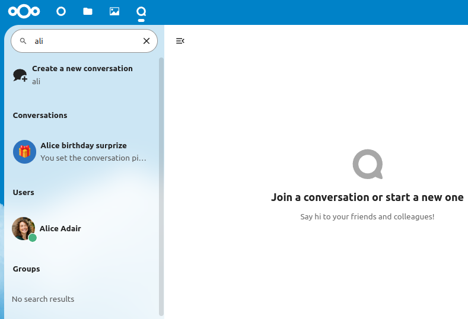
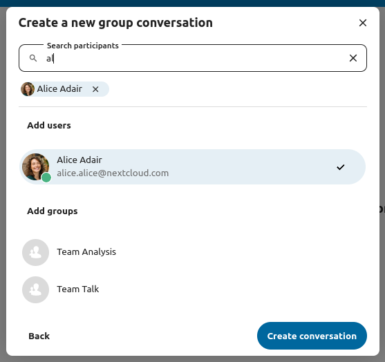
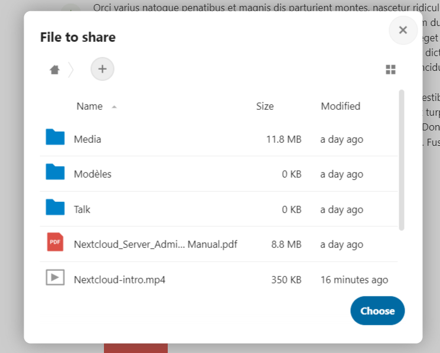
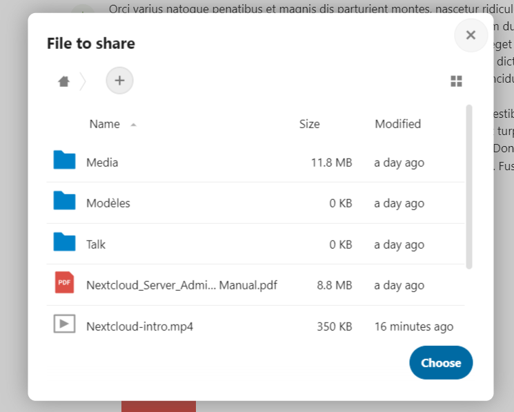
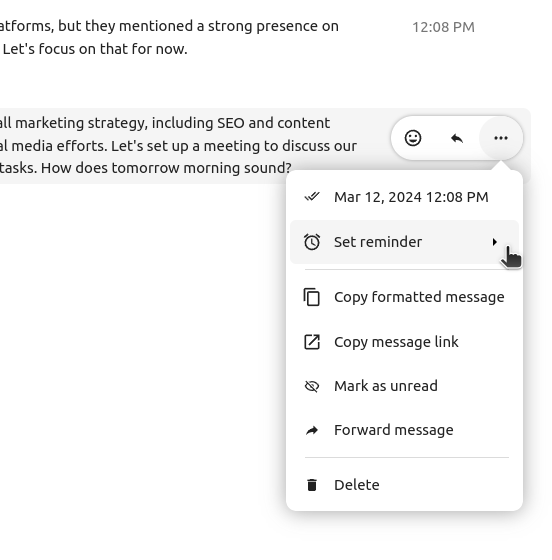

Conceptos básicos de Nextcloud Talk
Nextcloud Talk te permite chatear y realizar videollamadas en tu propio servidor.
Los chats y las llamadas tienen lugar en conversaciones. Puedes crear cualquier cantidad de conversaciones. Hay dos tipos de conversaciones:
** Conversaciones uno a uno. ** Un chat privado o una llamada con otro usuario de Talk. No puedes agregar a otras personas a esta conversación ni compartirla con un enlace. Comienzas un chat directo uno a uno buscando a otro usuario en la barra de búsqueda y luego haciendo clic en su nombre.
** Conversaciones grupales. ** Además de la persona que creó la conversación, una conversación grupal puede tener cualquier número de personas en ella. Una conversación grupal se puede compartir públicamente con un enlace, por lo que los usuarios invitados externos pueden unirse a una llamada. También se pueden listar públicamente para que otras personas de su servidor Nextcloud puedan unirse a la conversación.
Creando un chat
Puedes crear un chat directo, uno a uno, buscando el nombre de un usuario, un grupo o un círculo y haciendo clic en él. Para un solo usuario, se crea inmediatamente una conversación y puede iniciar su chat. Para un grupo o círculo, puedes elegir un nombre y una configuración antes de crear la conversación y agregar a los participantes.
If you want to create a custom group conversation, click the button next to the search field and filters button and then on Create a new conversation.
{kind=link}
You can then pick a name for the conversation, put a description, and set up an avatar for it (with uploaded photo or emoji), and select if the conversation should be open to external users and if other users on the server can see and join the conversation.

En el segundo paso, puedes agregar participantes y finalizar la creación de la conversación.
{kind=link}
Puedes cancelar la creación de una conversación haciendo clic fuera del área blanca del menú en cualquier momento.

View all open conversations
You can view all the conversations that you can join by clicking the button next to the search field and filters button and then on Join open conversations.

Filter your conversations
You can filter your conversations using the filter button located next to the search field. There are two options for filtering: 1. Filter unread mentions: This option allows you to view group conversations with unread mentions or unread one-on-one conversations. 2. Filter unread messages: This option allows you to view all unread messages in all joined conversations.

You can then clear the filter from the filters menu.

Compartir archivos en un chat
Puede compartir archivos en un chat de 3 formas.
Primero, puedes simplemente arrastrarlos y soltarlos en el chat.

En segundo lugar, puedes seleccionar un archivo de sus archivos de Nextcloud o un administrador de archivos eligiendo el pequeño clip y seleccionando de dónde le gustaría elegir el archivo.
 

{kind=link}
Puedes agregar más archivos hasta que hayas terminado y decidas compartir los archivos.

Todos los usuarios podrán hacer clic en los archivos para verlos, editarlos o descargarlos, independientemente de que tengan una cuenta de usuario. Los usuarios con una cuenta tendrán el archivo compartido automáticamente con ellos, mientras que para los usuarios invitados externos se compartirá como un enlace público.

Insertar emoji
Puedes agregar emojis usando el selector a la izquierda del campo de entrada de texto.

Using Markdown
You can enhance your messages with a markdown syntax support. See list for usage:
Headings and dividers
# Heading 1
## Heading 2
### Heading 3
#### Heading 4
##### Heading 5
###### Heading 6
Heading
===
Normal text
***
Normal text
Inline decorations
**bold text** __bold text__
*italicized text* _italicized text_
`inline code` ``inline code``
```
.code-block {
display: pre;
}
```
Lists
1. Ordered list
2. Ordered list
* Unordered list
- Unordered list
+ Unordered list
Quotes
> blockquote
second line of blockquote
Setting reminder on messages
You can set reminders on specific messages. If there’s an important message you want to be notified about later, simply hover over it and click on the reminder icon.
{kind=link}
In the submenu, you can select an appropriate time to receive a notification later.

Responder a mensajes y más
Puedes responder a un mensaje usando la flecha que aparece cuando pasa el cursor sobre un mensaje.

En el menú ... también puedes optar por responder de forma privada. Esto abrirá un chat uno a uno.
{kind=link}
Aquí también puede crear un enlace directo al mensaje o marcarlo como no leído para que pueda desplazarse hacia atrás la próxima vez que ingrese al chat. Cuando es un archivo, puede verlo en Archivos.
Gestionar una conversación
Siempre eres moderador en tu nueva conversación. En la lista de participantes a la derecha, puede elevar a otros participantes a moderadores usando el menú ... a la derecha de su nombre de usuario, o eliminarlos de la conversación.
Changing permissions of a user that joined a public conversation will also permanently add them to the conversation.

Moderators can configure the conversation. Select Conversation settings from the ... menu of the conversation on the top to access the settings.

Aquí puede configurar el nombre, el acceso de invitados, si la conversación es visible para otros en el servidor y más.

Messages expiration
A moderator can configure message expiration under the Conversation settings within the Moderation section. Once a message reaches its expiration time, it is automatically removed from the conversation.
The available expiration durations are 1 hour, 8 hours, 1 day, 1 week, 4 weeks, or never (which is the default setting).

Iniciar una llamada
When you’re in a conversation, you can start a call any time with the Start call button. Other participants will get notified and can join the call.

If somebody else has started a call already, the button will change in a green Join call button.

Durante una llamada, puedes silenciar tu micrófono y deshabilitar tu video con los botones de tu video en la parte inferior derecha, o usando los accesos directos M para silenciar el audio y V para deshabilitar el video. También puedes usar la barra espaciadora para alternar el silencio. Cuando estéssilenciado, al presionar la barra espaciadora se reactivará el silencio para que puedas hablar hasta que suelte la barra espaciadora. Si no estás silenciado, al presionar la barra espaciadora se silenciará hasta que lo suelte.
Puedes ocultar tu video (útil durante una pantalla compartida) con la pequeña flecha justo encima de la transmisión de video. Puedes volver a mostrarlo con la pequeña flecha de nuevo.
Puede acceder a su configuración y elegir una cámara web, micrófono y otras configuraciones diferentes en el menú ... en la barra superior.

From media settings dialog, you can also change the background of your video.

You can change other settings in the Talk settings dialog.

Cambiar de vista en una llamada
Puedes cambiar la vista en una llamada con el pequeño icono de cuatro bloques en la parte superior derecha entre vista promocionada y vista de cuadrícula. La vista de cuadrícula mostrará a todos igualmente grandes y si las personas no caben en la pantalla, aparecerán botones a la izquierda y a la derecha que te permitirán navegar.

La vista promocionada muestra a la persona que está hablando en grande y los demás en una fila debajo. Si las personas no caben en la pantalla, aparecerán botones a la izquierda y a la derecha que le permitirán navegar.